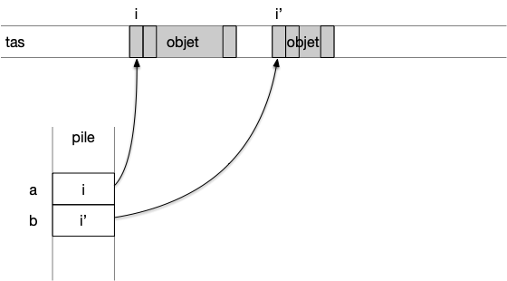

Briques de base
Le pseudo-code est constitué d'instructions dont le but est soit de manipuler des objets (création, affectation ou lecture) ou de contrôler le flux d'instructions (test et boucles).
Vous trouverez autant de type de pseud-code différents que d'informaticiens. Je vous donne ici "mon" pseudo-code. Son but est d'être assez explicite pour décrire sans ambiguïté les algorithmes de ce cours.
Ne soyez donc pas étonné si en lisant d'autres pseudo-codes ils ne suivent pas mes notations : ayez l'esprit ouvert. Je mes en fin de cette partie une petite liste (non exhaustive des différences vues ci et là).
Commençons par décrire les objets que l'on peut manipuler en pseudo-code et les moyens d'y accéder.
Objets et opérations
Objets basiques
Les objets que nous aurons directement à notre disposition sans avoir besoin de les définir sont appelés objets basiques et correspondent aux cinq types suivant :
- le type
booléenqui contient deux objets :vraietfaux - le type
bitqui contient les 2 objets :0et1 - le type
entierqui contient tous les entiers relatifs - le type
réelqui contient un ensemble dénombrable d'approximation de réels - le type
caractèrequi contient l'ensemble des glyphes UNICODE :"a","b", ...
Enfin on considérera le type vide ∅ (nommé None en python, null en javascript ou encore void en C) qui ne contient aucun objet.
Tous les autres types d'objets que l'on peut créer seront des compositions de ces 5 types d'objets (un point en 3D est constitué de 3 réels, une chaîne de caractères est une liste de caractères, etc).
Notez que tous les objets basiques à part les entiers sont de taille fixe :
- booléen 1bit
- caractères 32bits si on utilise les caractères Unicode
- réel norme IEEE sur 64bits
On peut sans perte de généralité se restreindre aux entiers entree 0 et $2^{64}$, et c'est d'ailleurs ce que beaucoup de langages de programmation font, puisque qu'un entier quelconque peut être représenté en base $2$ et découpé en paquets de 64 bits. C'est ce que font les languages d programmation comme python où un entier, qui n'est pas borné pfr nature, est composé d'un tableau d'entiers codés sur 64bits. Ceci est cependant transparent pour l'utilisateur (et c'est tant mieux).
À retenir
On considérera toujours qu'un objet basique est de taille connue et donnée au début du programme.
An algorithmie, on ne préoccupe pas vraiment d'où sont stockés les objets. Ils peuvent être sur une feuille, dans la mémoire de l'informaticien ou sur un ordinateur : peu importe. Pour un ordinateur réel, les objets sont stockés dans une partie de la mémoire nommée tas (le tas est un tableau où chaque case contient 1 byte = 8 bit).

Les objets sont stockées dans le tas. Notez que le tas peut contenir des "trous"., c'est à dire des endroits sans objets.
Opérations
Les opérations que peuvent effectuer les pseudo-codes sont liées aux objets. On doit pouvoir :
- créer des objets
- opérer sur des objets :
- opérations sur les entiers et/ou réels :
- arithmétique : addition (
+), soustraction (-), multiplication (*), division (/) - opérations usuelles comme prendre la valeur entière, la valeur absolue, ...
- la division entière de deux nombre (
//) et le modulo (%) - logique : égalité (avec le signe
==), plus petit que (<), plus grand que (>), plus petit ou égal (≤), plus grand ou égal (≥)
- arithmétique : addition (
- opérations sur les caractères :
- logique : égalité (avec le signe
==)
- logique : égalité (avec le signe
- opérations sur les booléens : "négation logique" (non,
NOT, $\neg$), "et logique" (et,&&,ANDou $\land$), "ou logique" (ou,||,ORou $\lor$)
- opérations sur les entiers et/ou réels :
- afficher un objet. On suppose que l'on possède une opération unaire spéciale nommée
affichequi affiche à l'écran (ou à n'importe quoi permettant à l'utilisateur d'avoir un retour) l'objet. Par exempleaffiche 42va afficher l'objet entier valant 42 à l'écran.
Les deux seuls moyens de créer des objets se font via des constantes (l'entier 42) ou comme des résultats d'opérations (le booléen Vrai est crée comme résultat de l'opération 40 > 2)
Variables
Les objets que l'on manipule doivent pouvoir être conservés pour que l'on puisse les réutiliser tout au long du programme. Cet espace espace de stockage, que l'on nomme une mémoire, est identifié d'un point de vue algorithmique, à une gigantesque suite de cases adjacentes à laquelle l'algorithme peut accéder en 1 instruction et pouvant contenir un objet basique.
Une variables est alors associé à la première case de la mémoire contenant l'objet. D'un point de vue algorithmique, cela revient à référencer un objet, à le nommer :
Définition
Une variable est un nom auquel est associé un objet d'un type donné.
Les variables nous permettent de manipuler les objets. Conceptuellement parlant, ce sont juste des liens vers l'objet qu'elle référence.
En algorithmie, tout comme pour les objets on ne se préoccupe pas vraiment où sont stockés les variables. Pour un ordinateur réel, elles sont stockées dans une partie de la mémoire nommée pile et contiennent l'indice de la mémoire où commence l'objet qu'elle référence. Chaque variable est donc juste assez grande pour stocker un indice (64bit sur les ordinateur actuel ce qui permet d'avoir théoriquement un tas de taille $2^{64}byte = 18446744073709551616B = 16777216 terabyte).

Chaque variable a la même taille et sont stockés de façon consécutives dans la pile. En effet, les variables sont crées au début de l'algorithme et sont toues supprimées en même temps à la fin de l'algorithme.
Définition
Avant de pouvoir être utilisée, une variable doit être définie :
TBD nom := type
La ligne précédente crée une nouvelle variable nommée a pouvant référencer des objets de type entier. Dans tout le reste du pseudo-code, on sera sur que a contient une valeur entière.
On utilise l'opérateur de définition := pour créer une variable. Vous verrez aussi parfois cet opérateur remplacé par le mot "soit", en particulier lorsqu'il y a plusieurs variables à créer :
En pseudo-code, comme le principal soucis est la non ambiguïté, une variable ne peut contenir que des objets d'un type spécifié lors de sa définition.
Ce comportement est utilisé dans certains langages de programmation (java, rust, go) mais pas d'en d'autres comme le python où une variable peut être associée à des objets de types différents.
Il est important de noter que :
Une variable n'est pas un objet, c'est un lien vers un objet.
TBD voir partie code mémoire/pile.
Affectation
Une fois la variable crée, on peut lui affecter des objets, par exemple pour notre variable a crée précédemment :
a ← 3On utilise l'opérateur d'affectation ← pour affecter une variable. La ligne précédente associe ainsi à la variable a un objet entier valant 3.
On n'utilisera pas le signe = en pseudo-code pour l'affectation car elle n'est pas symétrique : à gauche une variable à droite un objet.
Comme le symbole ← n'est pas présent sur un clavier, de nombreux langages de programmation utilisent cependant le signe = pour une affectation.
Une variable peut-être affectée plusieurs fois :
a := entier
a ← 3
a ← 4Après la troisième ligne, la variable a est associée à un entier valant 3 et après la quatrième ligne à un entier valant 4.
Utilisation
Utiliser une variable consiste à la remplacer par l'objet qu'elle référence. Par exemple :
a := entier
a ← 3
affiche aTBD on commence par retrouver la valeur puis on l'affiche
si pas initialisé valeur pas connue, ça peut être n'importe quoi. Ce n'est pas bien. Prenez l'habitude d'initialiser toutes les variables.
a := entier
a ← 3
b := entier
b ← aLa ligne 4, une instruction d'affectation, s'exécute de la façon suivante :
- on commence par retrouver objet à droite de l'opérateur
←. C'est une variable : on récupère son objet, un entier valant 3 - on affecte cet objet à la variable à gauche de l'opérateur
←, la variableb
TBD espaces de noms
Autre exemple :
a ← 3
b := entier
b ← a + 1La ligne 4, une instruction composée d'une opération puis d'ue affectation, s'exécute de la façon suivante :
- on commence par retrouver objet à droite de l'opérateur
←. C'est le résultat d'une opération :- pour effectuer l'opération, il faut commencer par retrouver l'objet associé à
a: un entier valant 3 - on peut maintenant effectuer l'opération d'addition qui rend un objet valant 4
- pour effectuer l'opération, il faut commencer par retrouver l'objet associé à
- on affecte cet objet à la variable à gauche de l'opérateur
←, la variableb
TBD espace des noms
- l'affichage à l'écran :
affiche aPour permettre un retour à l'utilisateur de ce qu'à produit le pseudo-code.
Une variable est un nom, elle ne copie ni ne modifie un objet dans le pseudo-code suivant, les deux variables a et b référencent le même objet entier.
soient a et b deux entiers
a ← 3
b ← aDans la seconde instruction, on commence par retrouver l'objet nommé par a et on le nomme b : la case où est stocké l'entier dans la mémoire est donné à a et à b
Enfin, avant d'utiliser une variable, il faut a priori la définir avec le mot clé soit.
Abus de notation
Le but d'un pseudo-code est d'être explicite, c'est pourquoi :
- les variables doivent être définies avant d'être utilisée
- une variable ne peut contenir que des objets d'un type donné
Mais cela ne doit pas rendre le code lourd. On se permettra donc, lorsqu'il n'y a pas d’ambiguïté possible, l'abus de notations qui crée et affecte une variable en une seule fois :
- comme :
a := entier valant 3 - voir :
a ← 3lorsque le type de la variable est clair (ici un entier)
Tableaux
Définition
Un tableau est un conteneur nommé pouvant contenir $n$ variables de même type. $n$ est la longueur ou la taille du tableau. La taille d'un tableau est déterminée à sa création et ne peut être modifiée. Chaque variable du tableau peut être accédée via son indice, qui est un entier entre $0$ et $n-1$.
Si le tableau est nommé $t$ :
- $t.\mbox{longueur}$ sera égal à sa taille.
- $t[i]$ est sa variable d'indice $i$ si $0 \leq i < n$
- $t[-i]$ vaut $t[n-i]$ si si $0 < i \leq n$
TBD définition
a := [entier] {longueur: 12}soit a un [entier] de taille 12TBD nom := type paramètres
Un tableau est un mix entre variables et objet : c'est un objet contenant des variables. Les différentes références des variables du tableau sont stockées de façon contiguë en mémoire pour pouvoir y accéder rapidement pour y être lu ou modifiée, on considère que :
- la taille en mémoire d'un tableau est proportionnelle à la taille d'un objet fois la taille.
- il faut 1 instruction pour créer un tableau
- il faut 1 instruction pour accéder à une variable d'indice donné.
On considère que créer un tableau prend 1 instruction car celui-ce est de taille fixée. On justifiera ceci proprement plus tard.
Les tableaux peuvent être simples comme une suite finie d'entiers ou des types plus complexes comme une matrice à 2 dimensions où chaque élément du tableau est un autre tableau. La seule opération spécifique à un tableau est sa création qui peut être directe :
t ← [1, 3, 2]qui crée et initialise un tableau de 3 entierst := tableau de 23 caractèresqui crée un tableau de 23 caractères
On considère que la création d'un tableau prendra toujours 1 instruction, puis on affecte les variables. La première affectation est donc un raccourci pour 4 instructions :
- la création d'un tableau de longueur 3
- l'affectation
t[0] ← 1 - l'affectation
t[1] ← 3 - l'affectation
t[2] ← 2
Tout comme une variable, une fois le tableau crée, la valeur de chaque case est indéterminée !. Il est indispensable d'initialiser les valeurs de chaque case avant de les utiliser.
Toutes les autres opérations sur les tableaux sont faites graces aux opérations des objets basiques qui les composent. Il n'y a pas d'opérations spécifiques à ceux-ci :
À retenir
Les opérations sur les tableaux seront toujours des opérations composées d'une suite d'opérations effectuées sur les objets basiques les constituants.
Le type d'un tableau sera de la forme [T] et signifiera que le tableau contient des objets de type T. Un tableau de type [entier] contiendra des entiers.
On ne peut pas affecter un tableau. Il faut créer un nouveau tableau puis y recopier tous les éléments de l'ancien.
Tranches
On utilisera parfois, comme en python par exemple des sous tableaux via des tranches (slices en anglais) :
T[i:]représentera le tableau constitué des éléments de T à partir de l'indice i inclus jusqu'à la finT[:j]représentera le tableau constitué des éléments de T à partir de l'indice 0 inclus jusqu'à j excluT[i:j]représentera le tableau constitué des éléments de T à partir de l'indice i inclus jusqu'à j exclu
Tout comme pour les tableaux, on ne peut pas affecter une tranche de tableau. Il faut créer un nouveau tableau puis y recopier tous les éléments de l'ancien.
Chaînes de caractères
Les chaines de caractères sont un tableau uniquement composés de caractères. Cette structure est utilisée lorsque l'on veut écrire ou représenter plus qu'un caractère, c'est à dire quasi tout le temps.
Une chaîne de caractères est un tableau constitué uniquement de caractères.
Comme ce sont des tableaux, on peut :
- créer une chaîne de caractères :
"salut"crée la chaîne contenant les caractères"s","a","l","u"et"t"de façon contiguë en mémoire. - affecter une chaîne de caractères à une variable prend 1 instruction :
s ← "salut"prend 2 instructions, une pour la création et une pour l'affectation. - accéder à un caractère particulier en utilisant les crochets :
s[2]vaut le caractère"l" - connaître la longueur de la chaîne avec :
s.longueur
Les chaines étant très utilisées, des langages comme python les considèrent comme un type de base et considèrent les caractères comme étant des chaîne de langueur 1.
Chacune des quatre opérations précédentes (création, affectation, accès et concaténation) prend 1 instruction (les chaînes crées sont des constantes).
La chaîne de caractère étant très utilisée, on se permettra les abus suivant :
- de définir une chaîne directement
s ← "Salut" - d'utiliser le type
chaîneplutôt que[caractère]. Dans cde cas, l'objet sera non modifiable (s[2] ← "p"ne sera pas une instruction valide pour des chaînes alors que c'est une instruction valide pour un tableau de caractères). - on définit l'opération de concaténation avec l'opérateur
+:"salut" + " toi !"vaut la chaîne de caractères"salut toi !"
Ainsi, un tableau de chaînes sera de type [chaîne].
Instructions de contrôle
Si un des deux buts d'une instruction est de créer des objets à partir d'autres (ce que l'on vient de voir), le second but est de contrôler le flux d'instructions à exécuter. Ces instructions sont de deux types :
Ces formes d'instruction nécessitent de grouper les instructions en blocs.
Blocs
Lier les instructions en blocs. On va utiliser ici le formalisme de python pour définir un bloc :
type de bloc:
instruction 1
instruction 2
...
instruction nOn décale les instructions du bloc de sa définition. C'est un truc clair qui permet de voir du premier coup d'œil les instructions d'un bloc.
Exécution conditionnelle d’instructions
On veut pouvoir exécuter un bloc de code si une condition logique est VRAIE :
si (condition logique):
instruction 1
...
instruction n
Cette instruction basique peut avoir plein de variantes comme :
si (condition logique):
instruction 1
...
instruction n
sinon:
instruction 1
...
instruction n'
ou encore :
si (condition logique):
instruction 1
...
instruction n
sinon si (autre condition logique):
instruction 1
...
instruction n'
Ou tout mix de tout ça, du moment que c'est clair !
On peut dériver toutes les variantes de la forme initiale.
Répétition
On doit pouvoir répéter un bloc tant qu'une condition logique est vérifiée :
tant que (condition logique):
instruction 1
...
instruction n
Le ploc précédent est exécuté tant que la condition logique est vraie. Il existe une variation de ce bloc très utile :
pour chaque élément x d'un tableau:
instruction 1
...
instruction n
On exécutera alors le bloc autant de fois qu'il y a d'éléments dans le tableau et à chaque itération du bloc, la variable x vaudra un autre élément du tableau. On prendra les éléments du tableau par indice croissant.
Le code précédent est équivalent au code suivant, moins élégant, mais qui explicite le numéro de l'itération courante : à l'itération $i$ on examine le $i+1$ ème élément du tableau et on a déjà examiné les $i$ premiers. :
pour chaque i de [0 .. tableau.longueur[:
x ← tableau[i]
instruction 1
...
instruction n
Enfin, on peut tout à fait écrire la variante pour chaque de la forme initiale tant que :
i ← 0
tant que i < tableau.longueur:
x ← tableau[i]
instruction 1
...
instruction n
i ← i + 1"Abus" de notation
On se permettra, lorsque l'instruction est assez claire de procéder à des raccourci pour rendre le pseudocode plus digeste. Attention, la plupart de ces opérations ne seront pas des opérations élémentaires !
Répétitions
répéter k fois:
...Pour :
pour chaque i de [1 .. k]:
...Répétitions par borne
Tout un tas de variations sont possibles, du moment que ce soit compréhensible. Par exemple :
pour i de a à b:
...Ou encore :
pour i=a à i=b:
...Pour :
pour chaque i de [a .. b]:
...Répétitions à pas fixé
pour i de a à b par par pas de k:
...ou encore :
pour chaque i de [a .. b] par pas de k:
...pour :
i ← a
tant que i ≤ b:
...
i ← i + kAffectation d'une tranche de tableau
T[a:b] ← kpour :
pour chaque i de [a .. b[:
T[i] ← kFonctionne aussi pour :
T[:] ← kQui correspond à :
pour chaque i de [0 .. T.longueur[:
T[i] ← kOu encore à :
T[a:b] ← T'[a':]Qui correspond à :
pour chaque i de [0 .. b-a[:
T[a + i] ← T'[a' + i]Les affectations de tranches ne sont pas une instruction simple, mais nécessitent plusieurs instructions : ceux de la boucle sous-jacente.
Ainsi, le code suivant nécessite $1 + j - i$ instructions (1 instruction de création du nouveau tableau puis j-i affectations) :
T' ← un nouveau tableau contenant T[i:j] # j - i + 1 instructions en 1 ligneConcaténation
Avec deux tableaux :
T ← T1 + T2pour :
T ← un nouveau tableau de taille T1.longueur + T2.longueur
pour chaque i de [0 .. T1.longueur[:
T[i] ← T1[i]
pour chaque i de [0 .. T2.longueur[:
T[T1.longueur + i] ← T2[i]